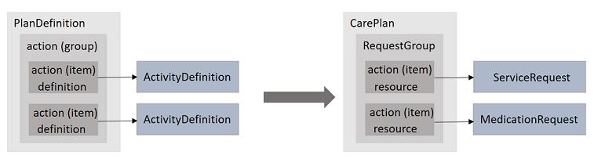

RarecareFHIRIG - Local Development build (v0.1.0). See the Directory of published versions
Home
Rarecare-FHIR-IG
This repository contains the FHIR resources for the “Een PGO voor iedereen” (“A personal healthcare environment for everyone”) project.
MedMij and the “PGO for everyone” project
The Netherlands has a national effort, MedMij, to provide all Dutch citizens with a personal healthcare environment, web or mobile. However, persons with rare diseases have trouble seeing their condition properly represented. Due to the rare nature of their condition, vendors are hesitant to invest in small populations. Having a macine-readable Rare Condition profile would enable vendors to simply read the necessary data to provide those persons with customized dashboards, graphs and questionnaires to address their conditions properly. Moreover, healthcare professionals, patient organizations and researchers could all benefit from the structured collection of data.
The RareCare Data Model
The Rare Care models are maintained at:
https://rarecare.world
and (only partially complete yet):
https://decor.nictiz.nl/art-decor/decor-datasets–zaz-
From those resources FHIR profiles are generated.
The basis is a Data Model of Rare Conditions:

A Rare Condition IS_A Disease, but will also be composed of diseases: i.e. Shwachman-Diamond Syndrome is typically associated with Neutropenia. A Disease is associated with Symptoms, which may be abnormal lab values, represented by LOINC codes. Symptoms may also be HPO-coded phenotypical abnormalities. A Disease is associated with Medication, here represented with ATC coding. Diseases are also associated with ICF impairments in functioning (b.xxx codes) or activity and particapation (d.xxx codes).
The condition plans are abstract plans, not yet bound to a particular patient.
The mapping from data model to FHIR resource types is as follows:
| Data model | FHIR resource type | Coding |
|---|---|---|
| Rare Condition | PlanDefinition | Orpha, Snomed CT, ICD-10 |
| Disease | PlanDefinition | Snomed CT, ICD-10 |
| Symptom (only lab tests now) | ActivityDefintion, ObservationDefinition | LOINC |
| Medication | ActivityDefintion with product | ATC |
| Function, Participation | Questionnaire | ICF |
The FHIR profiles
PlanDefinition
A PlanDefinition is a general disease management plan, i.e. not a plan for a particular patient, but a generic plan to be rolled out when a particular patient enters care. When that is the case, a CarePlan based on the generic PlanDefinition can be made.
 “Action and ActivityDefinition”
A PlanDefinition can consist of many subplans. A plan for Shwachman Diamond Syndrome would, for instance, contain PlanDefinitions for Neutropenia management, Pancreas Insufficiency etc.
The RareCare PlanDefinitions are the FHIR way to define actions to be taken for a particular rare disease:
- laboratory outcomes to be followed
- medication which may be taken
- functioning which needs to be monitored
- social support which may be required
These actions are defined using ActionDefinitions.